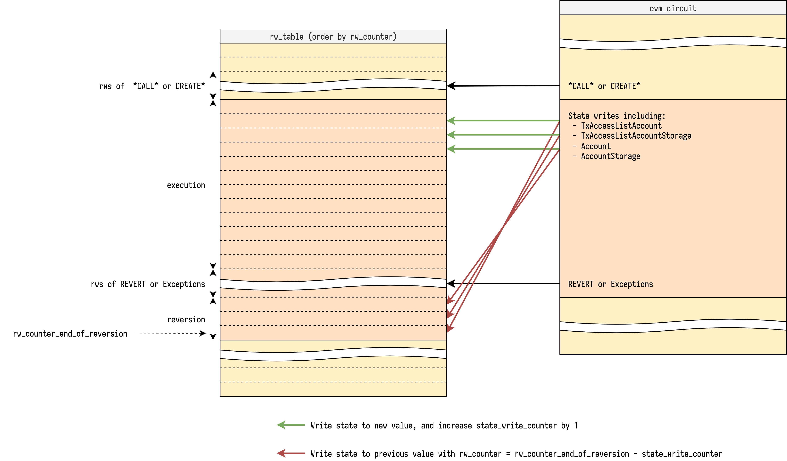

Reversible Write Reversion
Reversible write reversion might be the most tricky part to explain of the EVM circuit. This note aims to illustrate how the current approach works with some diagrams, and collect all the other approaches for comparison.
Revert or not
With full execution trace of a block, if we iterate over it once, we can know if each call (including create) is successful or not, and then determine which reversible writes are persistent, and which are not.
So each call could be annotated with 2 tags:
is_success- If this call ends withSTOPorRETURNis_persistent- If this call and all its caller haveis_success == true
Only reversible writes inside a call with is_persistent == true will be applied to the new state. Reversible writes in a call with is_persistent == false will be reverted at the closest call that has is_success == false.
Current approach
Since the only requirement of a read/write access is rw_counter uniqueness, we are not restricted to only do read/writes with sequential rw_counter in a step, instead we can do read/write with any rw_counter, as long as we don't break the rw_counter uniqueness requirement.
We ask the prover to tell us each call's information including:
is_success- Described aboveis_persistent- Described aboverw_counter_end_of_reversion- Therw_counterat the end of reversion of the call if it hasis_persistent == false
In EVM circuit we track the value reversible_write_counter to count how many reversible writes have been made so far. This value is initialized at 0 of each call.
With is_persistent, rw_counter_end_of_reversion and reversible_write_counter, we can do the reversible write with its corresponding reversion at the same step, because we know at which point it should happen. The pseudo code of reversible write looks like:
rw_table.lookup(
rw_counter=rw_counter,
reversible_write=reversible_write, # write to new value
)
if not is_persistent:
rw_table.lookup(
rw_counter=rw_counter_end_of_reversion - reversible_write_counter,
reversible_write=reversible_write.reverted(), # write to previous value
)
rw_counter += 1
reversible_write_counter += 1
Note that the we are increasing the reversible_write_counter, so the reversions are applied in reverse order in rw_table, which is exactly the behavior we want.
Another important check is to ensure rw_counter_end_of_reversion is correct. At the step that does the reversions, we check if there is a gap of rw_counter to the next step, where the gap size is exactly the reversible_write_counter. And in the end of the gap, the rw_counter is exactly rw_counter_end_of_reversion. The pseudo code looks like:
if not is_persistent:
assert rw_counter_end_of_reversion == rw_counter + reversible_write_counter
rw_counter = call.rw_counter_end_of_reversion + 1
With illustration:

The step that does the reversions is also responsible for reversions of its successful callees. Note that each callee's reversible_write_counter is initialized at 0. To make sure they can do the reversion at correct rw_counter, we need to propagate the rw_counter_end_of_reversion to be itself minus the current accumulated reversible_write_counter. The pseudo code looks like:
if not is_persistent and callee_is_success:
assert callee_rw_counter_end_of_reversion \
== rw_counter_end_of_reversion - reversible_write_counter

At the end of successful callee, we accumulate the reversible_write_counter to its caller.
Adjustment for SELFDESTRUCT
See Design Notes, Reversible Write Reversion Note2, SELFDESTRUCT
Other approaches
With revision_id
TODO